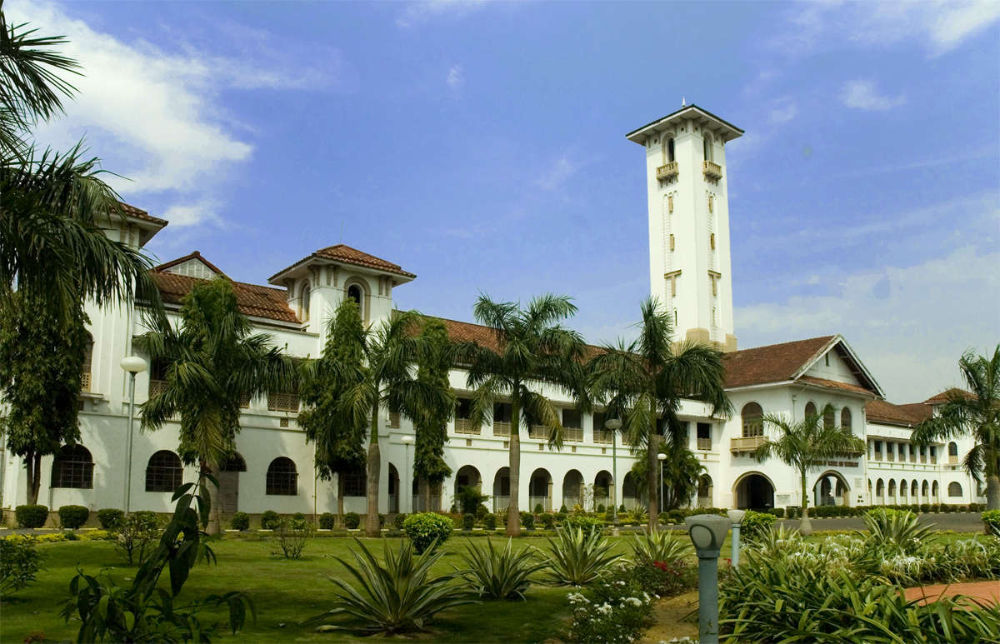
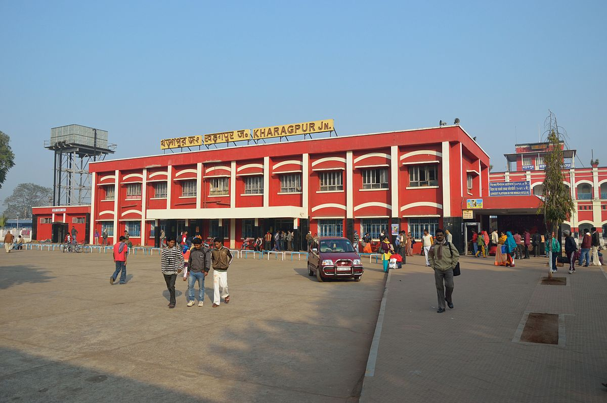

VISIT
Nehru Museum
The Nehru Museum of Science and Technology is a museum in Kharagpur, West Bengal, India. It was founded in 1990 at the Hijli Detention camp building, later the IIT-Kharagpur Heritage Building, which is now named as Hijli Saheed Bhavan. The imposing building, bearing resemblance to the Byzantine style of architecture, was used by the British rulers of India to detain the freedom fighters during the 1930s.
Main Building, IIT KGP
The Indian Institute of Technology Kharagpur (IIT Kharagpur or IIT KGP) is a public engineering institution established by the government of India in 1951. It is the first of the IITs to be established, and is recognized as an Institute of National Importance by the Government of India.
As part of Nehru's dream for a free self-sufficient India, the institute was established to train scientists and engineers after India attained independence in 1947. It shares its organisational structure and undergraduate admission process with sister IITs. IIT Kharagpur has a 8.5 square kilometres (2,100 acres) campus is residence to about 22,000 inhabitants. The students and alumni of IIT Kharagpur are informally referred to as KGPians. IIT Kharagpur holds two festivals: Spring Fest (Social and Cultural Festival) and Kshitij (Techno-Management Festival).
Kharagpur Junction railway station
Kharagpur Junction came up in 1898-99. On one side, Bengal Nagpur Railway’s Kharagpur-Cuttack line was opened on New Year’s Day in 1899. On the other hand, the opening of the bridge over the Rupnarayan River at Kolaghat, on 19 April 1900, connected Howrah with Kharagpur. Kharagpur was also linked with Sini the same year. The line was ready in 1898-99. The Kharagpur-Midnapore branch line was opened to traffic in 1901.
It is the busiest junction station in South Eastern Railway Zone after Howrah. Hence, it is termed as Gateway to South Eastern Railway.It is one of the fifty highest railway reservation in India. It is a junction which connects Howrah to Mumbai, Chennai, Adra/Purulia and New Delhi via Tatanagar as well.
Sample

Saying